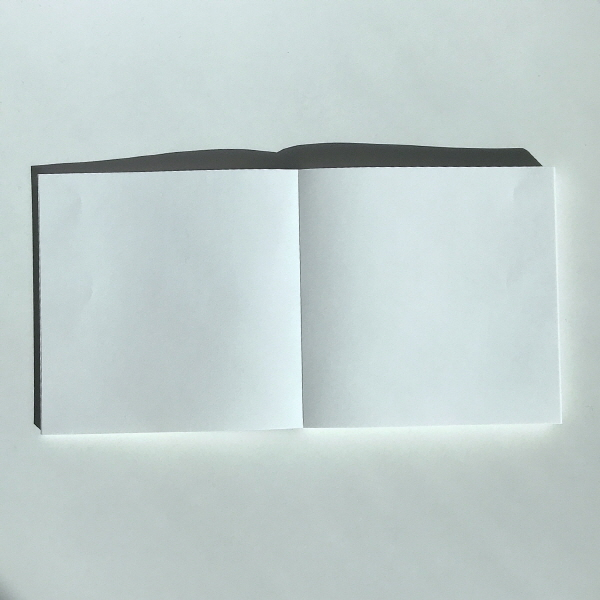
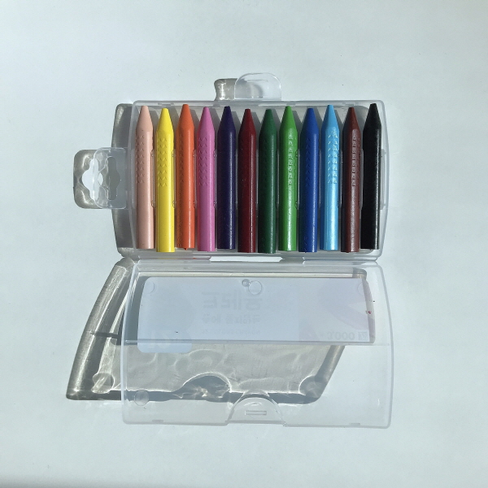
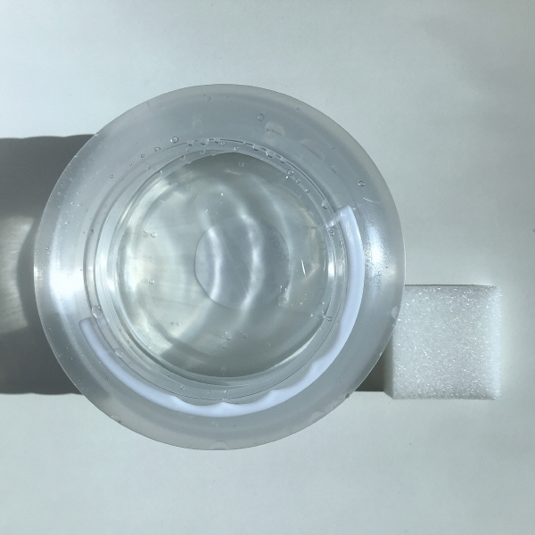
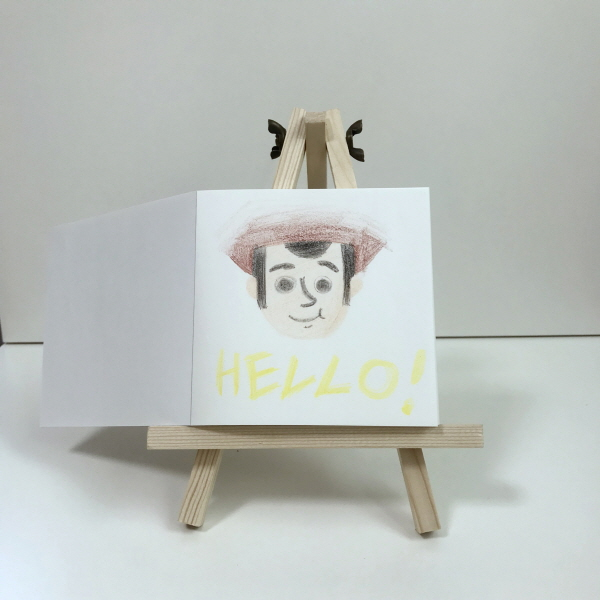
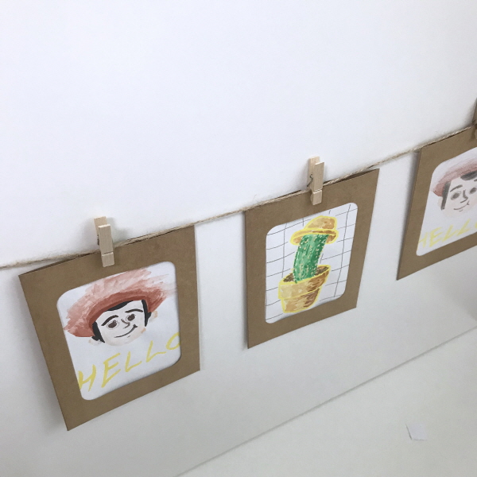

✎KIT 구성

10000원으로 만드는 나만의 작은 드로잉 공간
한 손에 쏙 들어오는 노트메모지와 다양한 컬러의 채색도구로 표현하고 싶은 모든 것을 그려보는 시간을 가져보아요.
수채화가 끌리는 날에는, 물감만으로.
크레용이 끌리는 날에는, 크레용만으로.
도구에 상관없이 드로잉을 하고싶을 때는, 모든 도구를 사용해 좀더 알록달록한 표현을 해보아도 좋아요.
✎디테일

미니 캔버스

손에 묻지않아 깔끔한 크레용 ,12색
붓+물감+팔레트 3 in 1 수채화 물감 ,12색
크래프트 감성 가득 포토프레임 ,4개입
쁘띠쁘띠한 이젤

투명 수채화 물통+스펀지
✎크레용으로 그릴래요
오늘은 물감쓰기가 귀찮아요.
그럼 크레용만 써볼까요?
제가 좋아하는 캐릭터인 토이스토리 우디를 그려보았어요.
크레용이 손에 묻지않고 딱딱해서 훨씬 드로잉하기 수월했어요.

이렇게 보니 우디가 정말 인사하는 것만 같네요!
때로는 크레파스로 쓱싹쓱싹 색칠하던 어린 시절로 돌아가고 싶을 때가 있어요.
그럴 때 나만의 미니 화실에서 추억을 색칠해보는 건 어떨까요?
✎물감으로 그릴래요
오늘은 부드러운 수채화가 끌려요.
물통에 물을 담고, 붓을 들어볼까요?
이번에도 웃고 있는 우디를 그려보았어요.
번짐없이 슥슥 잘 그려지고 발색도 최고에요!

수채화로 그려본 우디는 좀더 사람같군요.
밝을 줄 알았던 노랑색이 개나리꽃처럼 활짝 피었어요.
✎ver.ALL
오늘은 모든 채색도구를 사용하고 싶어요.
크레용으로 테두리를 그리고, 물감으로 속을 채워요.
빛이 들어오는 쪽에는 물을 많이, 빛이 없는 쪽에는 물감을 많이.
귀여운 밀짚모자를 쓴 선인장을 그려보았어요.
크레용은 직선적이고 거친 느낌을,
물감은 쨍하고 부드러운 느낌을 주네요.
섞어서 잘 활용하면 한 폭의 작품이 완성된답니다.
✎작은 전시회
완성한 그림을 구겨지지 않게 프레임에 넣어보아요.
흰 캔버스와 크래프트 프레임의 조화는 정말 감성적이네요.
집의 분위기가 달라졌어요!
내가 그린 그림을 걸어놓으니 집이 작은 전시회장이 되었어요.

이렇게 귀여운 전시회가 있다니, 가보고싶지 않으신가요?
나만의 작은 전시회를 열어보세요!
✎리뷰
요즘 같이 전자기기로 그림을 그리는 우리의 삶에서
우리의 느낌, 마음을 자유로운 방식으로 드러낼 수 없을까에 대하여 생각하게 되었다.
나만의 화실 만들기 키트는 집 밖을 나가지 않는 집순이,집돌이들에게도, 나처럼 여행을 좋아하는 사람들에게도
나만의 창작 공간뿐만 아니라 드로잉 과정을 통한 어떤 소중한 '경험'을 선사해준다.
갑자기 무언가를 그리고 싶을 때, 여행 중에 본 풍경을 내 손으로 직접 해석하고 싶을 때, 생각이 많아 정리가 필요할 때,
혹은 정말 아무것도 할 게 없는 순간에도 이 키트만 있다면, 나는 화가가 될 수 있다.